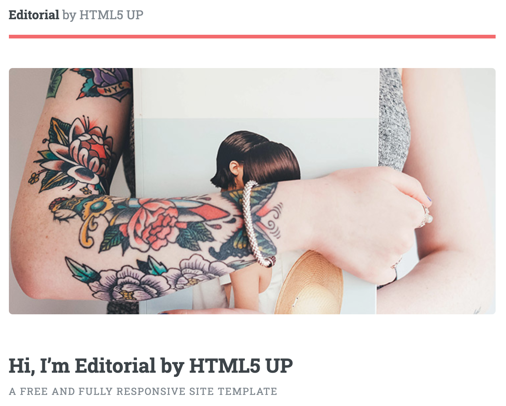

This is me.

Veldu eða smíðaðu html sniðmát fyrir vefsíðuna þína, skipulegðu hana með upplýsingum um þína ferilskrá.
Skrásettu fyrsta verkefnið og settu á github með því að nota Git bash.
Þegar vefsíðan er komin í loftið skal hlekkja hana á vefsíðulista áfangans.
Hægt er að gera vefsíðuna á Ensku eða Íslensku.
Til að búa til heimasíðu þarf að ná í nokkur forrit. Ég notaði Brackets til þess að kóða síðuna og Github Desktop til þess að færa HTML skrárnar ásamt myndum og fleiri upplýsingum yfir á Github á auðveldan hátt.
Mér til hjálpar notaði ég gott myndband sem fór vel yfir ferlið, þ.e.a.s. hvernig maður setur síðu á netið.
Ég byrjaði á því að kynna mér verkefnið. Það mátti velja á milli þess að hann sína eigin hráa síðu og kóða hana frá grunni eða finna sér template og kóða út frá því. Þar sem ég hafði enga fyrrum reynslu í HTML kóðun ákvað ég að nota template og fann mér slíkt. Það heitir Editorial. Ég valdi það þar sem mér fannst hönnunin frekar snyrtileg ásamt því að það fylgdi með elements skrá sem inniheldur mikið af góðum upplýsingum og kóða til að setja upp flotta síðu. 
Nú þegar ég var búinn að kóða verkefnið mitt, þá þarf að tengja saman github og skrárnar í tölvunni. Það er erfiðara sagt en gert.
Til að birta síðuna þarf að gera nokkur skref.
Það þarf að búa til aðgang til þess að hýsa heimasíðunni.
Með því að nota GithubDesktop einfaldar maður verkefnið stórlega. Annars þarf að nota terminal til að para saman möppunni í tölvunni og á netinu.
Með því að klóna respirotyið býr maður til möppu fyrir heimasíðuna sem inniheldur allar skrár sem eru á síðunni.
Það er mikilvægt að setja möppuna á þæginlegan og aðgengilegan stað þar sem hver og ein einasta skrá sem tengist þessari síðu fer í möppuna.
Maður færir allar skrár í möppuna til þessa að síðar setja þær á netið
Nú er ég búinn að búa til þessa heimasíðu og hef búið til síðu sem fjallar um mig ásamt því að hengja þar ferilskránna mína.
Ég hef aldrei áður kóðað í HTML né búið til heimasíðu. Ég lærði afskaplega mikið og er nú í dag full fær um að búa til mína eigin heimasíðu og setja hana á netið
Ég notaði eftirfarandi leitarorð mér til innblásturs.
This is me.

This is a bridge.

Circular windows on a spherical building.
If there are any questions please contact me via email, phone or doves.